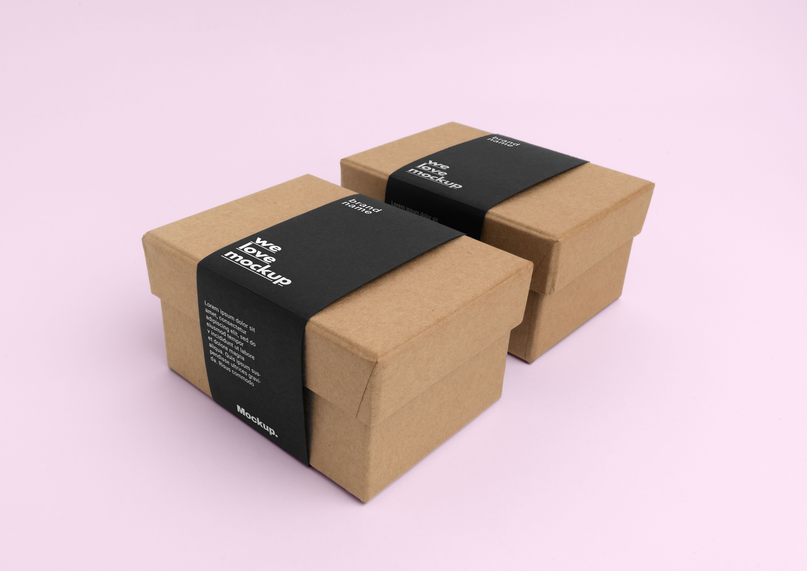
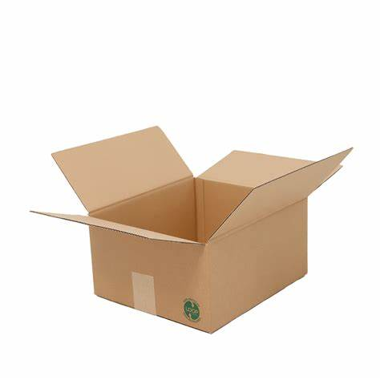
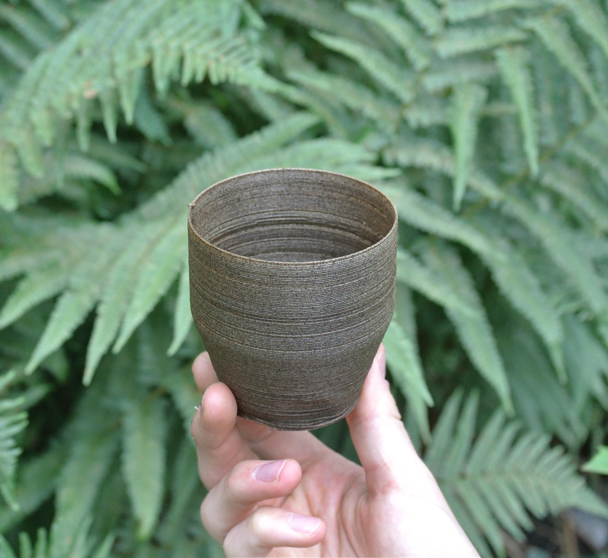
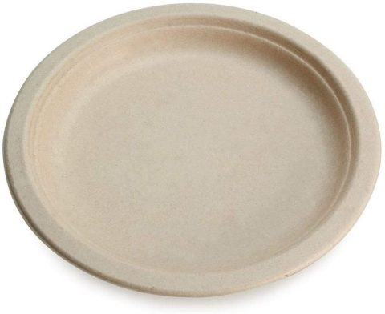
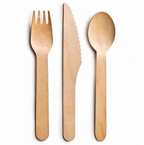

Biodegradable seaweed wrapping paper. The seaweed is durable, eco-friendly, and extremely versatile, able to package most common items with adequate protection.(more colors not shown)
Boxes and Containers

Seaweed-based cartons are strong and sustainable. They can be re-used over and over again, depending on uses and holdings.

Boxes are made to withstand unpredictable shipping handlings and all weather. All can be sealed and folded to ensure complete safety of the package.
Kitchen Ware

These reusable cups are a great alternative to their plastic foes. Note that all cups must be hand washed. Not dishwasher friendly.

Seaweed-based plates are eco and kid friendly! Unable to break when dropped, these plates offer two amazing benefits. Note that all plates must be hand washed. Not dishwasher friendly.

Our sets of utensils are efficient and sustainable. Don't worry, you can't taste the seaweed while you're eating! Note that all utensils must be hand washed. Not dishwasher friendly.
Bags
Seaweed based bags offer a better way of shopping in style. These bags can hold up to 50 pounds of items without snapping at the handles!